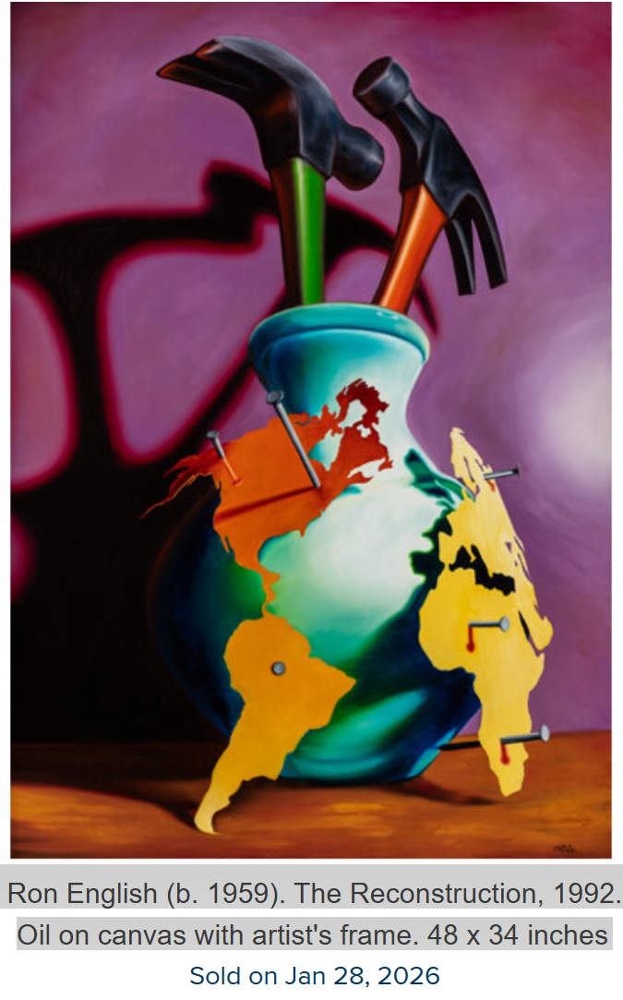
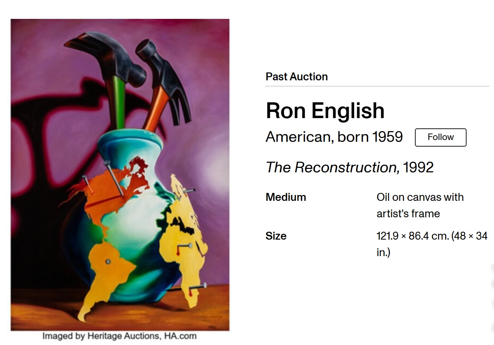
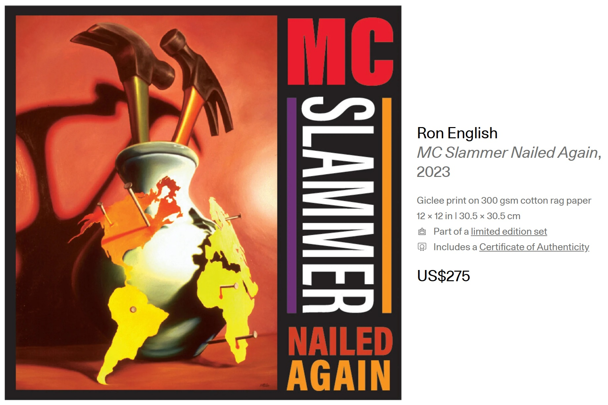

Exhibitions
Tools as Art: The Hechinger Collection, City Museum, Saint Louis, Missouri, US, and elsewhere, July 1, 2001–December 30, 2008.
Literature
Paul Richard and Sarah Tanguy, Tools as Art: The Hechinger Collection (New York: Harry N. Abrams, 1995), p. 125, illustrated.
Ron English, Popaganda: The Art & Subversion of Ron English (San Francisco: Last Gasp, 2001), p. 78. ISBN 1-887128-60-3.
Notes
Heritage Auctions identifies this work as property from the Hechinger Collection and records the date as 1992, with the reverse signed and dated “ENGLISH ’92.”
A later Tools as Art: Work and Play prospectus from International Arts & Artists lists this work as 38 × 44 inches, which conflicts with the 48 × 34 inch dimensions recorded by Heritage Auctions. The present catalogue record follows the 48 × 34 inch dimensions.
This composition was later adapted by the artist as a limited-edition print in the Vinyl Chord: A Revolutionary Record Store series.
Ancillary Documentation
The following materials document the work through auction records, online art-market references, and a later related print.


